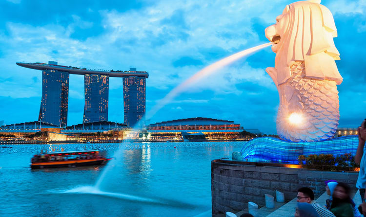

 Merlion Park is a famous Singapore landmark and a major tourist attraction, located near One Fullerton, Singapore, near the Central Business District (CBD). The Merlion is a mythical creature with a lion's head and the body of a fish that is widely used as a mascot and national personification of Singapore. Two Merlion statues are located at the park. The original Merlion structure measures 8.6 meters tall and spouts water from its mouth. It has subsequently been joined by a Merlion cub, which is located near the original statue and measures just 2 metres tall. The original Merlion Park was first designed by the Singapore Tourism Board (STB) near the mouth of the Singapore River in 1964 as an emblem of Singapore. On 15 September 1972, the park was officially opened at an installation ceremony for the statue, officiated at by then Prime Minister of Singapore, Mr Lee Kuan Yew. The original statue of the Merlion used to stand at the mouth of the Singapore River.
Singapore Page